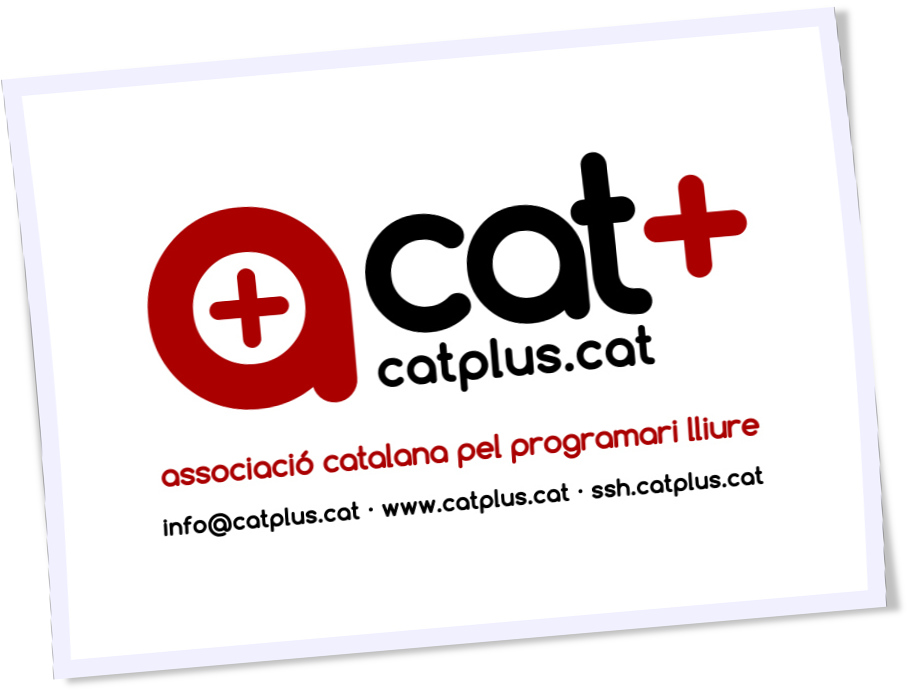

Tutorial: Com es va crear el DOSSIER+ ?
1 Detall del procediment de composició editorial del DOSSIER+ de l'entitat Associació pel programari lliure de Catalunya, Catplus.

Tutorial de maquetació en línea de comandaments, del DOSSIER+: De l'edició semàntica en \LaTeX, i l'ús d'ImageMagick per a les imatges, fins a la preparació final dels dossiers en pdftk.
Índex
- 1. Detall del procediment de composició editorial del DOSSIER+ de l'entitat Associació pel programari lliure de Catalunya, Catplus.
- 1.1. L'entitat ''Associació pel programari lliure de Catalunya, CATPLUS``
- 1.2. Motivacions
- 1.3. Justificació del projecte documental
- 1.4. Objectius i reptes dels arxius proposats
- 1.5. Continguts textuals
- 1.6. Continguts gràfics
- 1.7. Tecnologies emprades per a la confecció del DOSSIER+
- 1.8. Procediment inicial d'elaboració de les 4 pàgines principal en LaTeX
- 1.9. Característiques genèriques dels documents en del DOSSIER+
- 1.10. portada.tex La portada, un cas singular
- 1.11. quisom.pdf Exemples d'una bona organització de macros
- 1.12. proposta.tex Detalls característics de la pàgina de proposta
- 1.13. graphics.tex El colofò gràfic d'imatges tipus polaroid
- 1.14. Procediment d'obtenció d'imatges
- 1.15. Generació d'un mosaic (
montage.png) - 1.16. Consideracions al pes de l'arxiu montage.png
- 1.17. Re-generació de la contraportada a baix pes
- 1.18. Compilació final dels quatre arxius + 1, resultants;
- 1.19. Creació de shell scripts per al directori DOSSIER
- 1.20. Generació final de l'arxiu DOSSIER+A3.pdf per copisteria
- 1.21. Impressió digital del DOSSIER+A3.pdf
- 1.22. Us i finalitats
- 1.23. Model de carta d'enviament
1.1 L'entitat ''Associació pel programari lliure de Catalunya, CATPLUS``
El passat 12 de novembre, la nostre entitat Associació pel programari lliure de Catalunya, CATPLUS, era oficialment inscrita al registre d'entitats de la Generalitat, amb els estatuts aprovats i publicats. Poques setmanes després, vam celebrar la primera junta ordinària, posant en funcionament la maquinària de l'associació, amb l'objectiu d'assolir les fites proposades; «Article 2. Els fins de l'associació són: Promoure l'ús i difusió de programari lliure, en qualsevol de les seves plataformes.» I per fer-ho possible, l'associació cat+ es proposa realitzar les activitats següents (art.2 cont.): Divulgació; Realització de jornades, xerrades i tallers i, Formació; Realització de cursets, material didàctic i convenis formatius.
1.2 Motivacions
Treballar per la divulgació del programari lliure i dels valors que ens aporta de llibertat, equitat i lluita contra la fractura social i digital. Estem parlant d'innovació oberta, de TIC's pensades també per a la integració social i l'assoliment d'oportunitats per a persones, entitats, empreses i administracions. A Europa el programari lliure ja és gairebé una qüestió d'ètica en moltes administracions.
1.3 Justificació del projecte documental
En aquestes darreres setmanes de l'any, hem posat en funcionament les eines que ho faran possible; La nostre pàgina web www.catplus.cat, el nostre correu info@catplus.cat, els comptes de www.twitter.com/acatplus, Facebook, Google+, la redacció de les primeres propostes d'activitats, l'establiment de les primeres rondes de conversacions…
Tanmateix, faltava un document PDF adjuntable i descarregable per mitjans electrònics, alhora que imprimible en copisteria digital per entregar en suport paper imprès, com un A3 apaïsat i doblegat.
1.4 Objectius i reptes dels arxius proposats
1.4.1 DOSSIER+A3.pdf
Dossier A3 LANDSCAPE amb ordre 4,1,2,3 per impressió en copisteria digital Repte: Aconseguir un A3 degudament ordenat (#4,1,2,3), apaïsat, en mida final A3 i molt important; Respectant els màrgens originals del A4, al A3 final.
1.4.2 DOSSIER+.pdf
Dossier A4 de 4 pàgines per ENVIAR ADJUNT en correu electrònic o per descarregar Repte: Aconseguir un A3 de baix pes en Kb, via millor compressió de les imatges .png
1.5 Continguts textuals
Els principals continguts textuals del document son copia literal d'allò redactat i publicat al seu dia, a l'antiga pàgina web http://web.catplus.cat/ situada al cloud de Red Hat (Rhcloud Openshift).
Alhora, s'ha ampliat el contingut publicat a la web, amb el detall d'una proposta d'activitat tipus, de les bàsiques que figuren al nostre document de propostes (ANNEX actes.pdf).
1.6 Continguts gràfics
1.6.1 Logotips
L'habitual logotip de catplus, alhora que figurant en forma estès a contraportada.
1.6.2 Fotografies
S'han incorporat també, imatges d'activitats realitzades per membres de Catplus, malgrat que en altres contexts associatius germans, així com infografies relatives al PL.
1.7 Tecnologies emprades per a la confecció del DOSSIER+
LaTeX
Imagemagick Convert
Mosaic
Montage
Ruby require "RMagick"
Bash
pdftk
pdfnup
pngquant
1.8 Procediment inicial d'elaboració de les 4 pàgines principal en LaTeX
El document .tex original en LaTeX, es va confeccionar per a la realització del dossier informatiu de la ULlE (Universitat Lliure de l'Empordà).
Els 4 documents que junts, conformaran el DOSSIER+ son:
portada.tex quisom.tex proposta.tex graphics.tex
Aquests 4 documents conformaran un cop compilats amb
$pdflatex
portada.pdf quisom.pdf proposta.pdf graphics.pdf
Alhora hi ha un 5è document ANNEX que recull la TIPOLOGIA d'actes possibles, en l'arxiu:
actes.pdf
1.9 Característiques genèriques dels documents en del DOSSIER+
La plantilla original conté notable complexitat, degut a que fa ús de la classe memoir, alhora que incorpora comandaments en el llenguatge gràfic Tikz, per als elements gràfics i de separació d'aquest peculiar document.
\documentclass[a4paper,11pt,final]{memoir} \renewcommand{\familydefault}{bch} % font \pagestyle{empty} % no pagenumbering \setlength{\parindent}{0pt} % no paragraph indentation La font es dota d'un cos més solid. No hi han nombres de pàgina ni identacions. ### Paquets invocats \usepackage{flowfram} % column layout \usepackage[margin=54pt,right=1.34cm,bottom=1.54cm]{geometry}% margins \usepackage[utf8x]{inputenc} \usepackage{graphicx} % figures \usepackage{url} % URLs \usepackage[usenames,dvipsnames]{xcolor} % color \usepackage{multicol} % columns env. \setlength{\multicolsep}{0pt} \usepackage{paralist} % compact lists \usepackage{tikz} ### Macros definides Model d'exemple (una per cada tipologia de paragraf): \newenvironment{quisom} {\ignorespaces\textbf{\color{Maroon} Qui som?}} {\SmallSep\ignorespacesafterend}
1.9.1 El marge esquerra
L'automatització certament ostensible en la filosofia , precisa tanmateix, la consolidació d'una imatge gràfica "corporativa" COHERENT dins els documents i entre ells.
En aquest cas el repte principal fou la consolidació del marge esquerra 'catplus'
% Left frame %%%%%%%%%%%%%%%%%%%% \begin{figure} \hfill \includegraphics[width=1.1\columnwidth]{logosol.jpg} \vspace{-6cm} \end{figure} \begin{flushright}\large \sffamily \textsc{\bfseries{CATPLUS Associació catalana pel programari lliure}} \\ \vspace{1em} \small{info@catplus.cat}\\ \vspace{.5em} \small \textbf{www.catplus.cat}\\ \vspace{1em} \vspace{.5em} \scriptsize{c/. Barcelona, 59 1-1\\ \vspace{.5em} 17002 GIRONA\\ \vspace{.5em} NIF G-55250740} \end{flushright}\normalsize \framebreak
1.10 portada.tex La portada, un cas singular
La portada del DOSSIER+, mostra elements en rotació vertical.
\rotatebox{90}{ \sffamily \scalebox{2}{\begin{minipage}{.6\textwidth} \begin{flushright} \scalebox{1}{\Huge\bfseries {\color{Black}\textsc{Associació catalana}}} \\ \SmallSep \scalebox{1.}{\Huge\bfseries{\color{Maroon}\textsc{pel programari lliure}}} \\ \SmallSep \vspace{3em} %\bigskip \end{flushright} \end{minipage}} } \vspace{-5em} \hspace{-10em} \begin{minipage}{.7\textwidth} \quote \quote \quote \textcolor{Gray}{\HUGE\bfseries{\scalebox{1.58}{DOSSIER}}}\\ \textcolor{Gray}{\HUGE\bfseries{\emph{\scalebox{.79}{proposta executiva}}}} \bigskip \large\textsc{Proposta de col·laboració entre l'Excm. Ajuntament i l'entitat Associació Catalana pel Programari Lliure, referent a la proposta d'organització d'una activitat divulgativa i formativa sobre Programari Lliure i amb finalitat social, tecnològica i laboral.} \end{minipage} \vfill
1.11 quisom.pdf Exemples d'una bona organització de macros
Utilitzarem ara \begin{multicols}{2} per a treballar amb dues
columnes.
Les macros definides abans del contenen les definicions d'entorns per a cada paràgraf. D'aquesta manera s'ha creat un nou tipus d'entorn per a cada paràgraf, pensant ja en la posterior usabilitat del dossier.
### Definició de macro \newenvironment{quisom} {\ignorespaces\textbf{\color{Maroon}\textsc{Qui som?}}} {\SmallSep\ignorespacesafterend} ### Invocació de l'entorn de la macro \begin{quisom} \emph{Som un grup multi-disciplinar de persones amb vocació per a la divulgació i difusió del programari lliure i llurs objectius socials, tecnològics i laborals.} La nostre junta directiva i fundacional, està integrada per divulgadors tècnics informàtics, amb sòlids coneixements d'administració i programació de sistemes GNU/Linux i evidentment, dels principis rectors del programari lliure, així com de l'anomenada filosofia UNIX i els seus \emph{tenets}. %\center \includegraphics[scale=.13]{webulle.jpg} \end{quisom} \SmallSep
Com veiem podríem incorporar petites il·lustracions a cada paràgraf,
respectant la columna. Alhora el \SmallSep ens dona la justa separació
entre paràgrafs.
1.12 proposta.tex Detalls característics de la pàgina de proposta
d'activitats
1.12.1 L'entorn tcolorbox
Característic del requadre curvilini i sombrejat a modus de fitxa:
\begin{tcolorbox}[colback=Maroon!10,colframe=Maroon!80!black] \begin{enumerate} \item \textbf{TÍTOL:``LLARGA VIDA AL TEU ORDINADOR''} \item \textbf{Durada:} 1/2 dia (4 hores) \item \textbf{Públic destinatari:} Persones, grups i entitats interessades en recuperar ordinadors, descobrir el programari lliure i els seus principis i el sistema operatiu Gnu/Linux \item \textbf{Metodologia:} Introducció conceptual, fonaments teòrics i taller pràctic sobre les màquines que els assistents duguin a l'acte o sobre el material didàctic de les exposicions. \item \textbf{Estructuració:} 0. Presentació de l'acte/s. Introducció teòrica al programari lliure i als sistemes Gnu/Linux. Reflexió sobre els requeriments de maquinari en funció del programari (lliure). Descripció de casos pràctics i exemples i proposta metodològica (còpies de seguretat, instal·lació S.O. i configuració) per a l'extensió del cicle de durada d'un ordinador. Taula rodona sobre qüestions ètiques del consumisme i el programari lliure i resolució de dubtes en qüestions pràctiques. Proposta d'ampliació d'informació, formació i coneixements. \end{enumerate} \end{tcolorbox}
1.12.2 La taula orientativa de despeses
\begin{table}[h] \centering \footnotesize\addtolength{\tabcolsep}{15pt} \caption{\footnotesize Taula de previsió de despeses per l'acte} \label{my-label} \begin{tabular}{llr} \hline \multicolumn{2}{c}{\textbf{PREVISIÓ DE DESPESES per ACTIVITAT}} & \\ \cline{1-2} Tipus & Concepte & Preu (\euro) \\ \hline Divulgació & Edició material & 40.00 \\ Divulgació & Impressió material & 10.00 \\ Organització & Dietes i desplaçaments & 54.00 \\ Organització & Logística convidat & 40.50 \\ Comunicació & Imatge i redacció & 25.50 \\ Protocol & Organitzció acte & 40.00 \\ Merchandising & Material promocional & 20.00 \\ Cartell o vinil & Cartell de l'acte & 10.00 \\ \hline \hline & TOTAL despeses originades: & 240.00 \\ \hline & TOTAL d'ingressos necessaris & 240.00 \\ \hline \end{tabular} \end{table}
1.13 graphics.tex El colofò gràfic d'imatges tipus polaroid
Bona part de la complexitat per elaborar aquesta pàgina final, no prové i precisament, del document , sinó del procés de composició gràfica de les imatges, amb el paquet imagemagick.
En LaTeX simplement s'insereix el .png resultant:
\hspace{1.2cm} \includegraphics[scale=.5]{montage.png}
En efecte, inserim montage.png sense més dificultat al document …
Però certament hi han hagut reptes a resoldre per a que això fos possible, optant per la generació d'un arxiu .png en comptes d'un arxiu .jpg.
1.14 Procediment d'obtenció d'imatges
Dins el directori imatges, s'han previament situat les imatges candidates a inserir, en diferents formats, tamanys i proporcions.
En aquest cas hi havien imatges:
png jpg pdf
1.14.1 Conversió de PDF a PNG
Per a les pdf, s'ha optat per convertir-les a .png amb
$ convert -quality 300 latex_dissabte.pdf latex.png
1.14.2 Arxius resultants
Obtenint imatges finals en .jpg i en .png tindrem els arxius a processar tot seguit.
1.14.3 Conversió de les imatges .jpg i .png
En diferents mides i proporcions, volem unificar aquests criteris i, convertir les imatges a un estil 'polaroid' molt fresc, que incorpora el marc característic en blanc, ondulacions, ombres i lleugeres rotacions.
Per a fer aquesta conversió utilitzarem el programet polaroid.rb que és en realitat una proposta molt interessant en ruby, que converteix les tradicionals i llargues invocacions dels diferents comandaments del imagemagick, com ara el composite, en un nou comandament de consola, gràcies a la sucinta facilitat de ruby per aquests propòsits.
A banda de tenir el imagemagick instal·lat, precissarem el paquet RMagick (Imagemagick per Ruby) que podrem instal·lar via:
ruby-rmagick - ImageMagick API for Ruby $ apt-get install ruby-rmagick
Tot seguit podrem executar el programet en Ruby fent
$ ruby polaroid.rb imatge/s.jpg
El qual generarà l'arxiu polaroid, amb un nou arxiu de sufixe -print, així:
de: map-ca-i-3000.png a: map-ca-i-3000-print.png
Es a dir, crearà un segon arxiu 'còpia' afegint el sufixe '-print' al nom de l'arxiu original, per diferenciar-lo.
El codi font de l'arxiu polaroid.rb és:
require "RMagick" if !ARGV[0] puts "Usage: polaroid.rb path-to-image" exit end image = Magick::Image.read(ARGV[0]).first image.border!(18, 18, "#f0f0ff") # Bend the image image.background_color = "none" amplitude = image.columns * 0.01 # vary according to taste wavelength = image.rows * 2 image.rotate!(90) image = image.wave(amplitude, wavelength) image.rotate!(-90) # Make the shadow shadow = image.flop shadow = shadow.colorize(1, 1, 1, "gray75") # shadow color can vary to taste shadow.background_color = "white" # was "none" shadow.border!(10, 10, "white") shadow = shadow.blur_image(0, 3) # shadow blurriness can vary according to taste # Composite image over shadow. The y-axis adjustment can vary according to taste. image = shadow.composite(image, -amplitude/2, 5, Magick::OverCompositeOp) image.rotate!(-5) # vary according to taste image.trim! # Add -print to image basename, write to file. out = ARGV[0].sub(/\./, "-print.") puts "Writing #{out}" image.write(out)
1.14.4 Un cop hem generat aquests arxius polaroid…
Els desarem al directori polaroid, manllevant les imatges originals.
Descartarem les imatges que malgrat les adaptacions fetes, siguin massa desproporcionades. Alhora, hauríem també de descartar tenir un nombre d'arxius polaroid igual a un nombre primer : 7,11,17, etc… puig que no seran fàcils de composar en producte a x b.
1.15 Generació d'un mosaic (montage.png)
Un cop tinguem les imatges ja finalment seleccionades per a composar el mosaic que il·lustrarà la contraportada, les copiarem novament al directori copia.
-rw-rw-r-- 1 user user 1800597 feb 4 20:06 Mapa-conceptual-del-programari-lliure-print.svg.png -rw-rw-r-- 1 user user 792961 feb 4 20:07 tw-print.png -rw-rw-r-- 1 user user 103008 feb 4 20:07 programari-lliure-8-728-print.jpg -rw-rw-r-- 1 user user 83179 feb 4 20:07 raon-programari-lliure-a-lescola-13-728-print.jpg -rw-rw-r-- 1 user user 61743 feb 4 20:07 thumb_474__4-print.jpg -rw-rw-r-- 1 user user 106756 feb 4 20:09 catplus-print.jpg -rw-rw-r-- 1 user user 373177 feb 4 20:10 latex-print.png -rw-rw-r-- 1 user user 134320 feb 4 20:30 nois.jpg -rwxrwxr-x 1 user user 298 feb 4 20:54 mosaic.sh -rw-rw-r-- 1 user user 1507090 feb 4 20:55 montage.png
Aqui disposarem d'un arxiu de Bash mosaic.sh
montage catplus-print.jpg Mapa-conceptual-del-programari-lliure-print.svg.png latex-print.png nois.jpg programari-lliure-8-728-print.jpg raon-programari-lliure-a-lescola-13-728-print.jpg thumb_474__4-print.jpg tw-print.png -quality 300 -geometry 300 -sharpen 3 -tile 2x4 -geometry +0+0 montage.png
Aquest arxiu invoca el comandament montage d'imagemagick, amb l'ordre escollit.
Com veiem utilitzem alguns modificadors (arguments) interessants a descriure:
-quality 300 : Qualitat optima/orientativa -geometry 300 : Tamany preferit/optim -sharpen 3 : Redefinició sharpen en grau 3 (sovint les adaptacions queden borroses) -tile 2x4 : La geometria del mosaic, dues files per quatre columnes (màxim!) -geometry +0+0 : La separació mínima entre imatges del mosaic (per condensar)
Com veiem, es generarà un arxiu montage.png amb el mosaic de polaroids.
1.16 Consideracions al pes de l'arxiu montage.png
Si no reduïm el pes del .png l'arxiu resultant en LaTeX graphics.pdf tindrà un pes massa elevat si el volem enviar per correu.
1.16.1 L'eina d'optimització de png's pngquant
Podem aconseguir reduccions molt significatives (proposem un 71% de qualitat)
La podem instal·lar via:
$ sudo apt-get install pngquant
I utilitzar amb:
$ pngquant --quality=71 montage.png $ ls -ltr
I comprobarem els nous pesos i reduccions, comparant el nou arxiu generat :
montage-fs8.png
Notem que pngquant afegeix el sufixe -fs8
Podem tanmateix verificar visualment la qualitat:
display montage-fs8.png
I eliminar el vell;
$ mv montage-fs8.png montage.png
1.16.2 Com funciona;
pngquant uses modified version of Median Cut quantization algorithm and additional techniques to mitigate deficiencies of Median Cut.
Instead of splitting boxes with largest volume or number of colors, boxes are selected to minimize variance from their median value.
Histogram is built with addition of a basic perception model, which gives less weight to noisy areas of the image.
To improve color further, histogram is adjusted in a process similar to gradient descent (Median Cut is repeated many times with more weight on poorly represented colors).
Finally, colors are corrected using Voronoi iteration (K-means), which guarantees locally optimal palette.
pngquant works in premultiplied alpha color space to give less weight to transparent colors.
When remapping, error diffusion is applied only to areas where several neighboring pixels quantize to the same value, and which are not edges. This avoids adding noise to areas which have high visual quality without dithering.
1.17 Re-generació de la contraportada a baix pes
Obtingut el nou montage.png amb una significativa reducció de pes, cal recompilar (pdflatex) el graphics.tex amb el nou arxiu.
Com que hem fet el mv, no cal editar el graphics.tex, puig que el montage.png continua rebent el mateix nom.
$ pdflatex graphics.tex
Observem ara, que el nou graphics.pdf generat ja pesa en relació aproximada a l'estalvi procurat al .png incrustat.
1.18 Compilació final dels quatre arxius + 1, resultants;
Els 4 documents que junts, conformaran el DOSSIER+ son:
portada.tex quisom.tex proposta.tex graphics.tex
Un cop els hem obtingut, ens situem al directori CATPLUS/DOSSIER
portada.pdf quisom.pdf proposta.pdf graphics.pdf
1.19 Creació de shell scripts per al directori DOSSIER
Els arxius a dalt llistats, resultaran en dos PDF's compilats;
1.19.1 DOSSIER+A3.pdf
Dossier A3 LANDSCAPE amb ordre 4,1,2,3 per impressió en copisteria digital Repte: Aconseguir un A3 degudament ordenat (#4,1,2,3), apaisat, en tamany final A3 i molt important; Respectant els marges originals del A4, al A3 final.
1.19.2 DOSSIER+.pdf
Dossier A4 de 4 pàgines per ENVIAR ADJUNT en correu electrònic o per descarregar Repte: Aconseguir un A3 de baix pes en Kb, via millor compressió de les imatges .png
Per a fer-ho possible de forma automatizada, dissenyarem dos shell scripts:
1.19.3 dossier.sh per generar PDF per ENVIAMENT PER CORREU
$ cat dossier.sh
ens mostra:
pdftk portada.pdf quisom.pdf proposta.pdf graphics.pdf cat output DOSSIER+.pdf compress
Amb ordre normal, i tamany A4, generarà DOSSIER+.pdf per enviament per correu.
1.19.4 copisteria.sh per generar PDF per IMPRESSIÓ EN COPISTERIA
$ cat copisteria.sh
ens mostra:
pdftk graphics.pdf portada.pdf quisom.pdf proposta.pdf cat output dossier_imprimir.pdf
Resultant en l'arxiu dossier\imprimir.pdf
1.20 Generació final de l'arxiu DOSSIER+A3.pdf per copisteria
L'arxiu anterior per copisteria dossier\imprimir.pdf encara no és tanmateix, prou útil per a copisteria. Les pàgines tenen l'ordre correcte, però la mida i els màrgens no son adequats, doncs no es pot passar d'A4 a A3 apaïsat, tant a la lleugera. Els marges verticals queden totalment desproporcionats.
1.20.1 muntatge.sh: Shell script final per DOSSIER+A3.pdf
Volem finalment; Dossier A3 LANDSCAPE amb ordre 4,1,2,3 per impressió en copisteria digital
I tenim dossier\imprimir.pdf
Per tant,
Ens caldrà un nou script muntatge.sh
$ cat muntatge.sh pdfnup dossier_imprimir.pdf --nup 2x1 --a3paper --landscape --outfile DOSSIER+A3.pdf
Que mitjançant el comandament pdfnup, convertirem les 4 pàgines en A4 de l'arxiu dossier\imprimir.pdf a un arxiu DEFINITIU DOSSIER+A3.pdf, en format A3 apaisat, 2x1.
$ evince DOSSIER+A3.pdf
Si anem a l'opció propietats del evince, podrem verificar que tenim un A3 verificat.
1.20.2 Continguts finals de la carpeta DOSSIER a copiar a USB o enviar:
-rw-rw-r-- 1 user user 86471 feb 4 14:24 portada.pdf -rw-rw-r-- 1 user user 121451 feb 4 14:37 quisom.pdf -rw-rw-r-- 1 user user 137567 feb 4 15:18 proposta.pdf -rwxrwxr-x 1 user user 87 feb 4 21:57 copisteria.sh -rwxrwxr-x 1 user user 88 feb 4 22:00 dossier.sh -rw-rw-r-- 1 user user 282905 feb 4 22:05 graphics.pdf -rw-rw-r-- 1 user user 650467 feb 4 22:05 dossier_imprimir.pdf -rw-rw-r-- 1 user user 653695 feb 4 22:05 DOSSIER+.pdf -rw-rw-r-- 1 user user 426441 feb 4 22:13 DOSSIER+A3.pdf -rw-rw-r-- 1 user user 85 feb 4 22:14 muntatge.sh -rw-rw-r-- 1 user user 18299 feb 4 23:51 historia.dat
Com podem veure, l'arxiu historia.dat és justament el present arxiu.
1.21 Impressió digital del DOSSIER+A3.pdf
A la copisteria digital ens podran imprimir aquest arxiu DOSSIER+A3.pdf
Una possibilitat econòmica es fer les cobertes en color (pàg 1,2 -abans 4,1-) I les dues pàgines interiors en B/N (pàg 3,4 -abans 2,3-)
1.22 Us i finalitats
S'imprimiran només DOSSIER+A3.pdf a copisteria, per a reunions concertades, disposant tanmateix tots els membres de la junta directiva d'una còpia a punt per a possibles reunions improvisades amb ajuntaments.
1.23 Model de carta d'enviament
Benvolguts,
El passat 12 de novembre del 2015, la nostre entitat Associació pel programari lliure de Catalunya, CATPLUS, era oficialment inscrita al registre d'entitats de la Generalitat, amb els estatuts aprovats i publicats. Poques setmanes després, vam celebrar la primera junta ordinària, posant en funcionament la maquinària de l'associació, amb l'objectiu d'assolir les fites proposades; «Article 2. Els fins de l'associació són: Promoure l'ús i difusió de programari lliure, en qualsevol de les seves plataformes.» I per fer-ho possible, l'associació cat+ es proposa realitzar les activitats següents (art.2 cont.): Divulgació; Realització de jornades, xerrades i tallers i, Formació; Realització de cursets, material didàctic i convenis formatius.
En aquestes darreres setmanes , hem posat en funcionament les eines que ho faran possible; La nostre pàgina web www.catplus.cat, el nostre correu info@catplus.cat, els comptes de www.twitter.com/acatplus, Facebook, Google+, la redacció de les primeres propostes d'activitats, l'establiment de les primeres rondes de conversacions…
Tot plegat ens ha de permetre treballar per la divulgació del programari lliure i dels valors que ens aporta de llibertat, equitat i lluita contra la fractura social i digital. Estem parlant d'innovació oberta, de TIC's pensades també per a la integració social i l'assoliment d'oportunitats per a persones, entitats, empreses i administracions. A Europa el programari lliure ja és gairebé una qüestió d'ètica en moltes administracions.
Allò que en pot resultar va molt més enllà de resultats i objectius, que hi son i molts; És al capdavall «divertir-nos amb la intel·ligència» el que com deia Richard Stallman (pare del programari lliure) ens fa aprendre pel plaer de fer-ho.
Junta de l'Associació cat+
##################################################### Associació catalana pel programari lliure CATPLUS Inscrita al reg. d'ass. #57338-J/2 amb NIF G-55250740 info@catplus.cat · www.catplus.cat · ssh.catplus.cat #####################################################